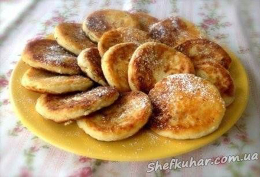
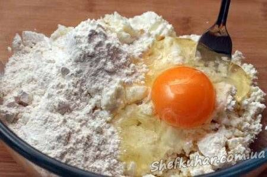
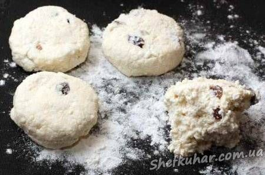
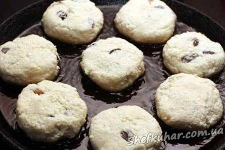
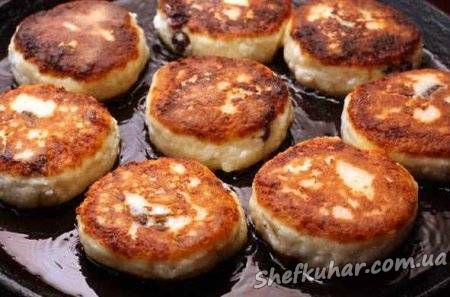

Сирники

Інгредієнти: Сир 5-9% жирності 250 г Сирна маса 250 г Борошно пшеничне 60 г Яйце куряче 1 шт. Цукор ванільний 10 г Ізюм світлий 20 г Рослинна олія 40 мл.
Кулінарний рецепт сирників
Змішайте сир з сирною масою і яйцем. Додайте ванільний цукор або ванільний екстракт і три повні столові ложки борошна, добре розмішайте.

Можна додатково додати трохи вимитих і висушених родзинок.

Із отриманої маси столовою ложкою відокремлюйте невеликі порції і на злегка вкритій борошном поверхні формуйте круглі сирники товщиною 1,5 см.

На розігріту сковороду з рослинним маслом викладайте сирники на деякій відстані один від одного, щоб було зручно знімати.

Смажте сирники з обох сторін на невеликому вогні до золотисто-коричневого кольору.

Подавайте зі сметаною, варенням або просто злегка присипте цукровою пудрою.
Смачного!